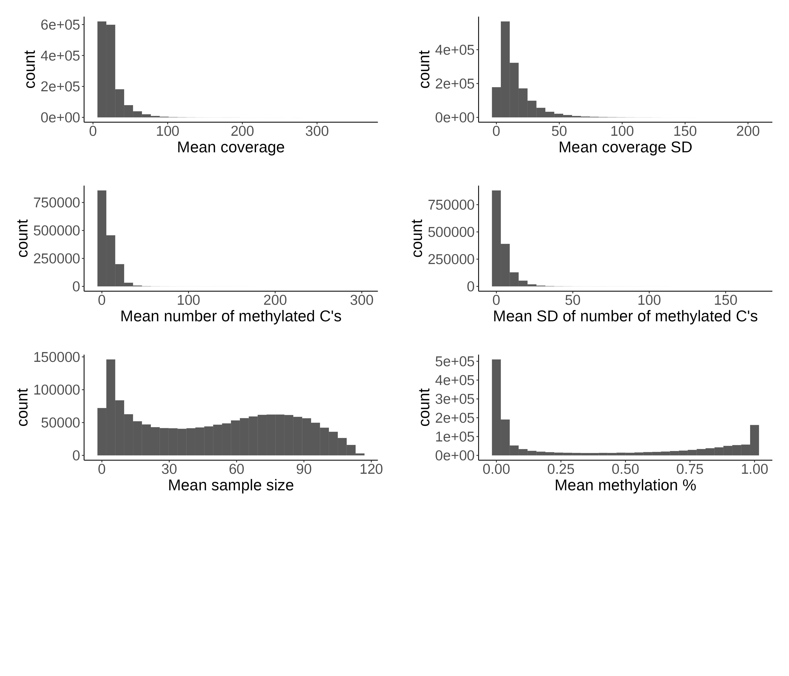
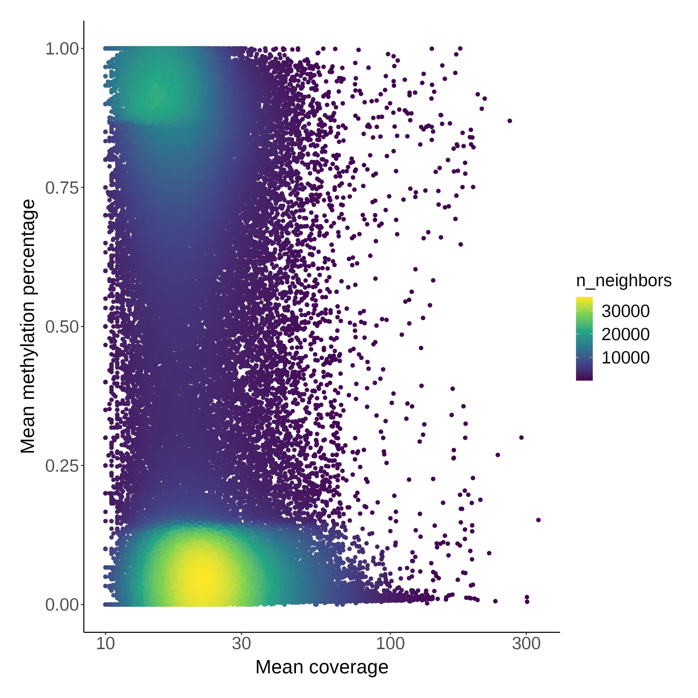
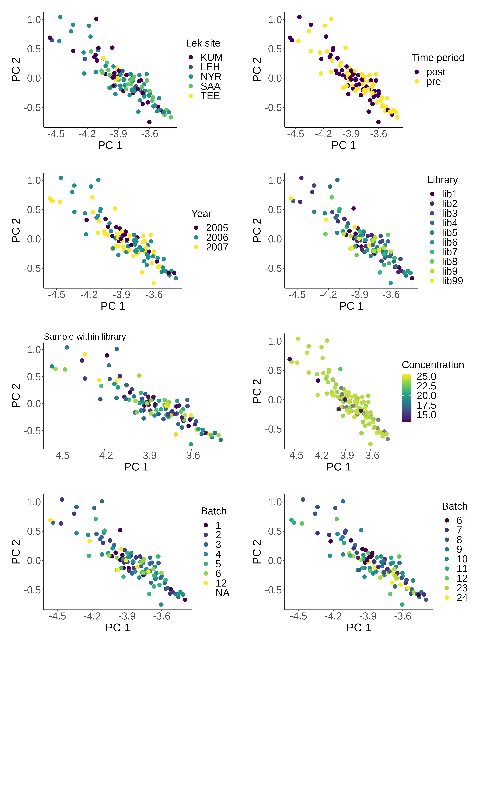

## load packages
pacman::p_load(tidyverse, data.table, methylKit, tibble, matrixStats, ggpointdensity)
## load data
load("data/processed/methylkit_prepost_raw.RData")
data <- getData(ltet_meth_unite)3 Data exploration
Data exploration, PCA, library effects
We explore our data to ensure there are no biases created by methodological factors. To do so, we conduct a PCA and build linear regression models to test for e.g. library effects.
We only use unfiltered data for this exploration.
3.1 Summary statistics
We start by collecting summary statistics per CpG site to check if methylation level is associated with coverage.
Code
#### Get summary statistics ####
# select columns for specific data: number of sites that are methylated, coverage
# number of columns in data
ncol <- ncol(data)
# first column with data respectively
first_cov <- 5
first_meth_n <- 6
# select columns
cols_cov <- seq(first_cov, ncol-(2-(first_cov-5)), 3)
cols_meth_n <- seq(first_meth_n, ncol-(2-(first_meth_n-5)), 3)
# make summary across all cpg sites
summary <- data.frame(site = c(paste(data$chr, data$start, sep="_")))
summary <- summary %>% mutate(mean_cov = rowMeans(data[cols_cov], na.rm=T),
sd_cov = rowSds(as.matrix(data[cols_cov]), na.rm=T),
mean_n_meth = rowMeans(data[cols_meth_n], na.rm=T),
sd_n_meth = rowSds(as.matrix(data[cols_meth_n]), na.rm=T),
na = rowSums(is.na(data[cols_cov])),
n = rowSums(!is.na(data[cols_cov])))
# calculate percentage methylation
sum_meth_prop <- data.frame(site = c(paste(data$chr, data$start, sep="_")))
for (i in 1:length(cols_cov)){
sum_meth_prop <- sum_meth_prop %>% mutate(methProp = data[cols_meth_n[i]]/data[cols_cov[i]])
names(sum_meth_prop)[i+1] <- ltet_meth_unite@sample.ids[i]
}
# add summary percentage methylation
summary <- summary %>% mutate(mean_perc_meth = rowMeans(sum_meth_prop[,-1], na.rm=T),
sd_perc_meth = rowSds(as.matrix(sum_meth_prop[,-1]), na.rm=T), .before = mean_cov)
# site to rownames
summary <- summary %>% remove_rownames %>% column_to_rownames(var = "site")The whole dataframe is very long, but we can check out the first 10 rows to see what the data look like:
| X | mean_perc_meth | sd_perc_meth | mean_cov | sd_cov | mean_n_meth | sd_n_meth | na | n |
|---|---|---|---|---|---|---|---|---|
| ScEsiA3_10002__HRSCAF_10935_92 | 1.0000000 | NA | 11.00000 | NA | 11.0000000 | NA | 115 | 1 |
| ScEsiA3_10006__HRSCAF_10939_97 | 0.8362985 | 0.1392619 | 17.14286 | 9.3235493 | 14.4761905 | 8.9644802 | 95 | 21 |
| ScEsiA3_1000__HRSCAF_1603_69 | 1.0000000 | 0.0000000 | 10.33333 | 0.5773503 | 10.3333333 | 0.5773503 | 113 | 3 |
| ScEsiA3_1000__HRSCAF_1603_73 | 0.0435897 | 0.1383665 | 12.76923 | 2.1661735 | 0.5384615 | 1.6641006 | 103 | 13 |
| ScEsiA3_1000__HRSCAF_1603_90 | 0.0665976 | 0.1105658 | 15.76667 | 4.6511647 | 1.1000000 | 2.0060254 | 86 | 30 |
| ScEsiA3_1000__HRSCAF_1603_99 | 0.9523810 | 0.0824786 | 11.33333 | 2.3094011 | 10.6666667 | 1.1547005 | 113 | 3 |
| ScEsiA3_1000__HRSCAF_1603_107 | 0.0358021 | 0.0438772 | 43.53763 | 31.4229766 | 1.5806452 | 1.9411033 | 23 | 93 |
| ScEsiA3_1000__HRSCAF_1603_109 | 0.0463004 | 0.0457295 | 43.51613 | 31.4188440 | 2.1075269 | 2.3334168 | 23 | 93 |
| ScEsiA3_1000__HRSCAF_1603_191 | 0.0175915 | 0.0336013 | 43.52688 | 31.4177987 | 0.7096774 | 1.1570262 | 23 | 93 |
| ScEsiA3_1000__HRSCAF_1603_213 | 0.0160323 | 0.0356791 | 43.50538 | 31.4077752 | 0.5698925 | 1.0150803 | 23 | 93 |
Below you can find the histograms of the parameters calculated (mean methylation etc.)

3.2 Coverage vs methylation
Next, we can plot the relationship between mean coverage and mean DNA methylation per site. However, as there are many CpG sites we randomly subset 100,000 CpG sites to visualize, and also visualize the density of the points as it is difficult to see overlapping areas.
#### Plot relationshp coverage and dna methylation #####
# geom pointdensity to get an idea of which points are where since many are overlapping
# on a subset of random CpGs
random_n <- 100000
ggplot(data=summary[sample(nrow(summary),random_n),], aes(x=mean_cov, y=mean_perc_meth)) + labs(x = "Mean coverage", y = "Mean methylation percentage") +
scale_x_continuous(trans = scales::log_trans(),
breaks = scales::log_breaks()) +
geom_pointdensity() +
scale_color_viridis_c() -> plot_cov_meth 
Here we see that there are many CpG sites with low average coverage and very low DNA methylation or very high DNA methylation. There is no obvious relationshp between the two, but there is some clustering going on (as expected).
3.3 PCA
Next, we can conduct a PCA to visualize potential methodological biases towards methylation. We only use complete data to conduct the PCA, meaning we only include CpG sites that are covered in each sample.
Code
#### PCA ####
# create dataset for PCA with only complete data
data_pca <- data.frame(matrix(unlist(sum_meth_prop), nrow=nrow(sum_meth_prop)),stringsAsFactors=FALSE)
data_pca <- data_pca[complete.cases(data_pca),]
nrow(data_pca)
data_pca <- data_pca[,-1]
data_pca <- lapply(data_pca, as.numeric)
# conduct pca and save plots
PCA <- prcomp(t(as.data.frame(data_pca)), center=F, scale=F) # t() transposes the matrix meth_PCA to get one coordinate for each id
# get eigenvalues and percentage explained
eigs <- PCA$sdev^2
var <- eigs/sum(eigs)
explained<-100*eigs/sum(eigs) #PC1 explains 97% of data
# PCA coloured by library, site
# first collect data required to plot the PCs
# data on lek site, sampling
load("data/phenotypes/fulldata_complete_epi_withdates.RData")
meta_ltet <- all_pheno_epi %>% dplyr::select(c(epi_nr, id, site, prepost, year)) %>% filter(!is.na(prepost))
# data on QC
load(file="/home/nioo/rebeccash/PhD_grouse/methylation_grouse/data/genomics/qc_epi.RData")
qc_ltet <- qc %>% dplyr::select(c(sample_id, Sample, lib, n_in_lib, conc_std, batch, extraction_batch))
qc_ltet <- subset(qc_ltet, Sample %in% meta_ltet$epi_nr)
# exclude repeats
qc_ltet <- subset(qc_ltet, sample_id != "lib99_1")
qc_ltet <- subset(qc_ltet, sample_id != "lib20_119")
qc_ltet <- subset(qc_ltet, sample_id != "lib20_191")
qc_ltet <- subset(qc_ltet, sample_id != "lib7_250")
# combine data with PC loadings
merge_pca <- data.frame(sample_id = ltet_meth_unite@sample.ids)
merge_pca <- left_join(merge_pca, qc_ltet, by = "sample_id")
merge_pca <- left_join(merge_pca, meta_ltet, by = c("Sample" = "epi_nr"))
merge_pca$pc1 <- PCA$x[,1]
merge_pca$pc2 <- PCA$x[,2]
# and with mean methylation level
summary_per_sample <- data.frame(sample_id = ltet_meth_unite@sample.ids)
summary_per_sample <- summary_per_sample %>% mutate(mean_perc_meth = colMeans(sum_meth_prop[,-1], na.rm=T))
merge_pca <- left_join(merge_pca, summary_per_sample, by = "sample_id")
# plot PCs
ggplot(merge_pca, aes(x = pc1, y = pc2)) + geom_point(size=3, aes(col = site)) +
labs(x = "PC 1", y = "PC 2", col = "Lek site") +
scale_color_viridis_d() -> pca_site
ggplot(merge_pca, aes(x = pc1, y = pc2)) + geom_point(size=3, aes(col = prepost)) +
labs(x = "PC 1", y = "PC 2", col = "Time period") +
scale_color_viridis_d() -> pca_prepost
ggplot(merge_pca, aes(x = pc1, y = pc2)) + geom_point(size=3, aes(col = as.factor(year))) +
labs(x = "PC 1", y = "PC 2", col = "Year") +
scale_color_viridis_d() -> pca_year
ggplot(merge_pca, aes(x = pc1, y = pc2)) + geom_point(size=3, aes(col = lib)) +
labs(x = "PC 1", y = "PC 2", col = "Library") +
scale_color_viridis_d() -> pca_lib
ggplot(merge_pca, aes(x = pc1, y = pc2)) + geom_point(size=3, aes(col = as.factor(n_in_lib))) +
labs(x = "PC 1", y = "PC 2", subtitle = "Sample within library") +
theme(legend.position="none")+
scale_color_viridis_d() -> pca_lib_n
merge_pca$conc_std[which(merge_pca$conc_std > 400)] <- NA #outlier and must be wrong
ggplot(merge_pca, aes(x = pc1, y = pc2)) + geom_point(size=3, aes(col = conc_std)) +
labs(x = "PC 1", y = "PC 2", col = "Concentration") +
scale_color_viridis_c() -> pca_conc
ggplot(merge_pca, aes(x = pc1, y = pc2)) + geom_point(size=3, aes(col = as.factor(batch))) +
labs(x = "PC 1", y = "PC 2", col = "Batch") +
scale_color_viridis_d() -> pca_batch
ggplot(merge_pca, aes(x = pc1, y = pc2)) + geom_point(size=3, aes(col = as.factor(extraction_batch))) +
labs(x = "PC 1", y = "PC 2", col = "Batch") +
scale_color_viridis_d() -> pca_batch_ext
cowplot::plot_grid(pca_site, pca_prepost, pca_year, pca_lib, pca_lib_n, pca_conc, pca_batch, pca_batch_ext,
labs="auto", align="hv", axis="lb", ncol=2, label_fontface = "plain", label_size = 22) -> pca_plots
3.4 Linear mixed effect model
Lastly, we want to make sure that average methylation percentage is not affected by library by conducting a LMM
#### LM ####
lmer_lib <- lmerTest::lmer(mean_perc_meth ~ lib + (1|id), data = merge_pca)
lmer_null <- lmerTest::lmer(mean_perc_meth ~ 1 + (1|id), data = merge_pca)
anova(lmer_lib, lmer_null)refitting model(s) with ML (instead of REML)Data: merge_pca
Models:
lmer_null: mean_perc_meth ~ 1 + (1 | id)
lmer_lib: mean_perc_meth ~ lib + (1 | id)
npar AIC BIC logLik deviance Chisq Df Pr(>Chisq)
lmer_null 3 -399.71 -391.45 202.85 -405.71
lmer_lib 12 -392.84 -359.80 208.42 -416.84 11.133 9 0.2667It seems there are no library effects on average CpG methylation.